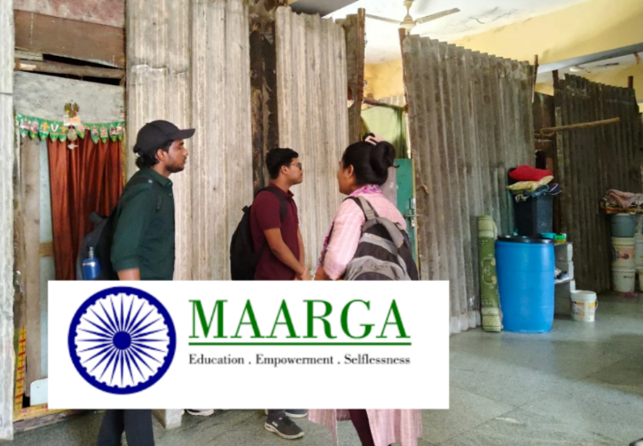
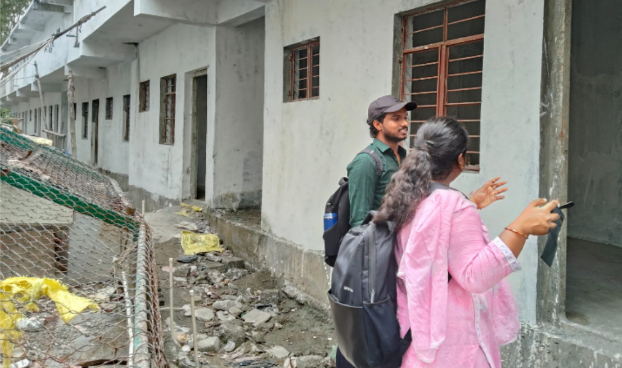
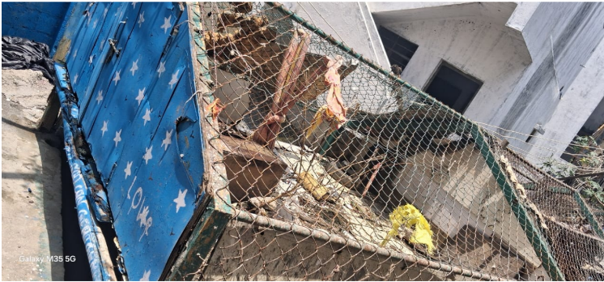
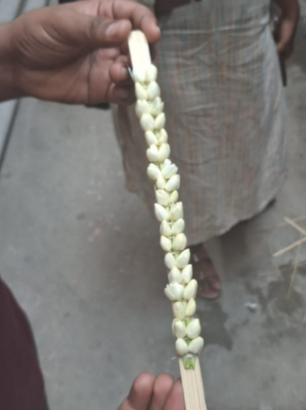

Connecting Households to Hope: Inside Maarga's Tech - Enabled Slum Support
On the first day of our field visit, we reached the main office of Maarga located in Kormangala. The day began with introductions both from our side and from the Maarga team. This set a friendly, open tone for the rest of the interaction. We engaged in a detailed conversation with one of the staff members who offered valuable insights into the organization's mission, structure, and ongoing fieldwork.
One of the early reflections shared by the team was that many first generation community members were not able to pursue education, largely because of their need to earn for the family at an early age. The team also highlighted a major structural challenge: no state government has formally allocated registered land to slum dwellers, leaving thousands of families in legal limbo.
We then visited the Slum Resource Center and learned about the Community Organizer (COC) model. Currently, there are 6 COCs operating across two centers one in Kormangala and the other in Jayanagar. Each COC is assigned to different areas within slums such as Ambedkar Nagar, Shanthi Nagar, etc. According to the team, they cover about 2000 households, and spend time with approximately 10 households per day, offering guidance, support, and information about government schemes. The residents mainly speak Telugu, Hindi, and Tamil, indicating a linguistically diverse setting.
We then moved into the Indiranagar slum area, accompanied by the Community Organisers (COs). This visit exposed me to the everyday reality of life in informal settlements, a reality filled with both challenges and resilience.

One of the most striking moments was seeing that some families do not have proper housing. They live in temporary shelters built inside the local community hall, which is not structurally safe. This situation reminded me how physical infrastructure is the first layer of dignity in any settlement.
The Maarga team told us that a new building is under construction nearby under the Pradhan Mantri Awas Yojana (PMAY). Though still incomplete, it gave a small ray of hope that safe and permanent housing could soon become a reality for at least some of these families.

Near the hall, I witnessed something even more heartbreaking: behind the building, we found what looked like a large cage meant for hens but shockingly, a person was actually living inside it. The structure was just big enough for a man to fit in. This moment left me stunned and silent. It was a powerful reminder of the depth of housing insecurity, and the dehumanization that can come with poverty.

Local Livelihoods: Adukku Malli - The Layered Jasmine Garland
As we moved through the area, I noticed a common livelihood activity among many women making "Adukku Malli," a beautiful, three-layered jasmine garland. These garlands are traditionally used for temple offerings, weddings, and festivals.


In one home, I met a woman who welcomed us warmly and explained the entire process to me in fluent English. I was taken aback, in the best way. It challenged my assumptions and reminded me that talent, intelligence, and skills exist everywhere they are just not always seen or celebrated.
Program Structures & Community Roles
We observed a highly structured approach to community engagement. The organization works through categorization of programs based on gender and age:
- Youth Programs: Yuva Janadhikara
- Women Empowerment: Bharatiya Grameen Mahila Sangh (BGMS) and Bhim Jyothi Mahila Sanghatane
They also run development-based skill training programs for women and home based workers. Skills include:
- Tailoring
- Nutrition and health awareness
- Arayan/Aadhi art
- Soap-making
- Basic computer training (3-month courses)
- Beautician training
Each ward in the area has a local representative, often a trusted community member, who acts as a liaison spreading important information like how to apply for a voter ID, Aadhaar card, or other documents. The organization has also incorporated legal awareness programs for women, especially around domestic violence and their legal rights.
Communication Methods & Use of Technology
Communication with the community happens mainly through WhatsApp groups, which allow COCs to stay in touch with individuals and share timely updates.
The organization introduced us to the BUSP app (Bangalore Urban Poor Special Project), a powerful digital tool developed during the COVID-19 pandemic. Initially started as a health and vaccination survey tool, BUSP evolved into a comprehensive data management platform for slum households.
Key features of BUSP include:
- A unique ID for each family
- Tracking access to government schemes and basic documents (Aadhaar, PAN, etc.)
- Originally used pen-and-paper data, now fully digitized
- Data is updated through field visits especially when survey questions are revised
- Currently used by COCs to track, revisit, and support families
The team also discussed DBT (Direct Benefit Transfer) a system that helps monitor whether individuals or families have received their entitled benefits. Earlier, funds were distributed manually (often by postmen), but now benefits are tracked through Aadhaar linked bank accounts.
Reflection
What stood out most to me was how community structure, human relationships, and digital tools work together to improve access and rights. The COC model is grassroots-oriented, ensuring that families aren't just being surveyed but also supported and followed up with. The presence of ward level representatives, communication through WhatsApp, and use of BUSP creates a triangle of connectivity: person to person, person to organization, and organization to data.
I was also struck by how the team doesn't just apply schemes randomly they first collect quality data, categorize needs, and then help with targeted application and handholding, especially for those who face digital, linguistic, or bureaucratic barriers.
It was clear that even the most advanced technology like BUSPS would be useless without the trust built through face to face interactions. The challenges they faced in the early days (distrust, resistance, repeated surveys) reminded me that tech is not neutral; it needs to be embedded in empathy, trust, and care.
Note: All photos included in this post were taken with the informed consent of the community members and Community Organisers (COs). We deeply respect their dignity, stories, and trust, and thank them for allowing us to document their environment and experiences.